Aries forma parte de los signos cardinales y al mismo
tiempo es un signo de fuego; también es el primer signo
del zodíaco, precisamente por eso, simboliza el inicio,
la creación. Se caracteriza por ser una persona rebosante
de energía y entusiasmo; avanzada y aventurera, adora la libertad,
los retos y las nuevas ideas.
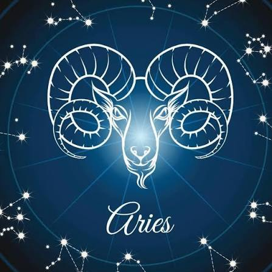
Tauro pertenece a los signos fijos y simultáneamente es un signo de tierra
La proyección del Sol en su nacimiento suele influir para que sean personas
firmes, decididas y constantes en varios sentidos. También adoran sentir
seguridad, por eso la buscan tanto, es como una necesidad constante en sus
vidas.
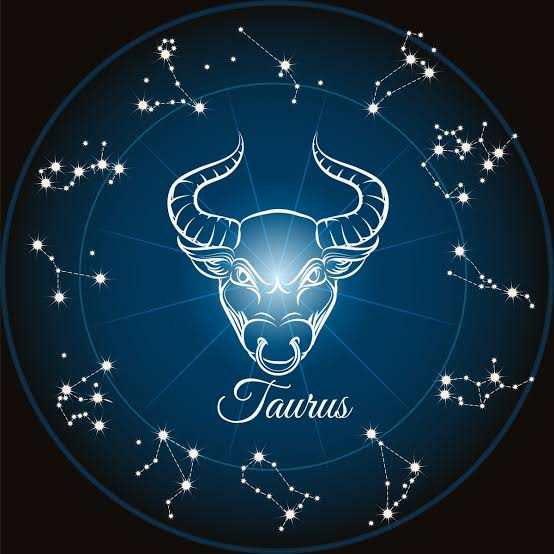
Géminis es un signo mutable que forma parte del elemento aire; como signo
de los gemelos, su carácter es doble y bastante contradictorio por complejo
. Por una parte es capaz de adaptarse con facilidad y rapidez a todo, pero
por otra puede resultar hipócrita. Su distintivo común es la comunicación y
el ingenio.
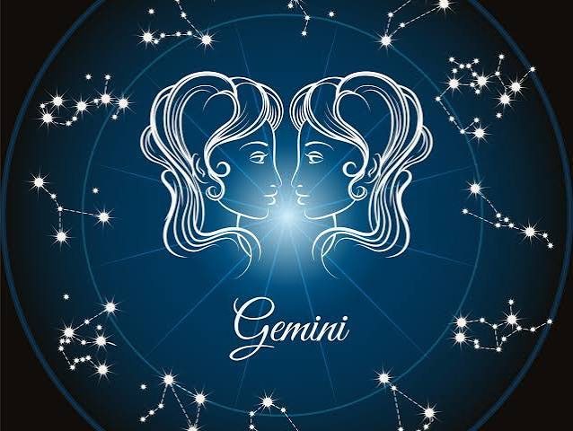
Cáncer es un signo cardinal y comprendido dentro de los signos de agua.
De los signos zodiacales, su carácter es el menos claro; puede ser desde
retraído, insociable y pelma, hasta deslumbrante, atractivo y admirado por
los demás. A veces es demasiado soñador, por eso equivoca el mundo real
con la utopía que ha construido en su cabeza: el refugio de las fantasías
que adora.
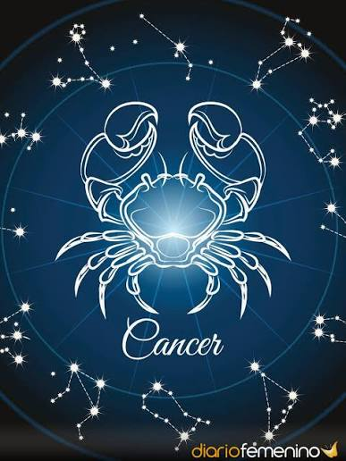
El signo de Leo es fijo y de fuego, también el signo más dominante del zodíaco.
Creativo y abierto, tiene ambición, valor, fuerza, autonomía y total seguridad
en sí mismo: sabe dónde quiere llegar y nada ni nadie podrá evitarlo. En contrapartida,
sus puntos negativos pueden ser tantos como las virtudes que tiene: vanidad,
egocentrismo, arrogancia, impostura y un genio de mil demonios, entre otros defectos.
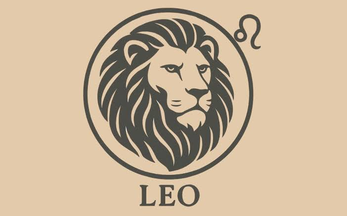
Virgo es un signo mutable y de tierra; representado por una virgen, es un signo
caracterizado por su espíritu crítico, precisión, reserva, paciencia y
convencionalismo. También es lógico, metódico y aplicado, le gusta aprender
y es capaz de analizar las situaciones más complejas con una claridad pasmosa.
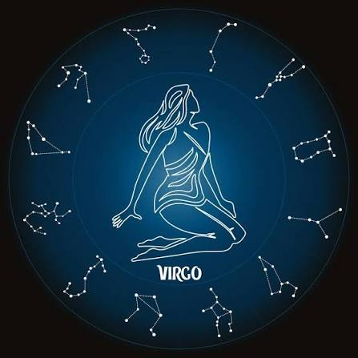
Libra es un signo cardinal y de aire, se encuentra además entre los signos más
refinados del zodíaco; tiene elegancia, encanto, diplomacia y buen gusto, ama
la belleza, es muy curioso por naturaleza y odia los conflictos. Sus puntos negativos
a veces son la frivolidad y un carácter voluble.
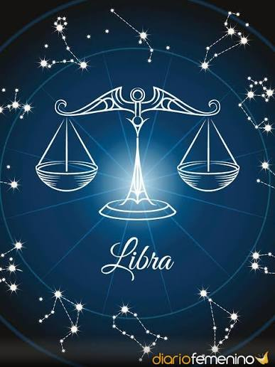
Escorpio es un signo fijo y de agua; su potencia y energía emocional son únicas en todo
el zodíaco. Tiene mucha imaginación e intuición, además de una gran capacidad para el
análisis, fuerza de voluntad y firmeza, aunque también es muy sensible y emocional consigo
mismo y con el entorno.
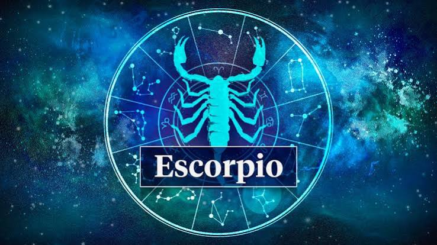
Sagitario pertenece a los signos mutables y su elemento es el fuego; es uno de los signos
más resplandecientes y positivos del zodíaco. También es versátil, adora las aventuras y
buscar nuevos horizontes, ya que tiene una mente abierta a nuevas ideas y experiencias y
mantiene una actitud decidida ante la adversidad; además, frecuentemente la suerte le acompaña.
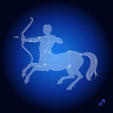
Capricornio es un signo cardinal y de tierra, y uno de los signos del zodíaco más constante,
sólido y apacible. También se caracteriza por ser prudente y práctico en todos los asuntos que
le conciernen. Sus aspectos más negativos tienden hacia el pesimismo, la fijeza y la melancolía.
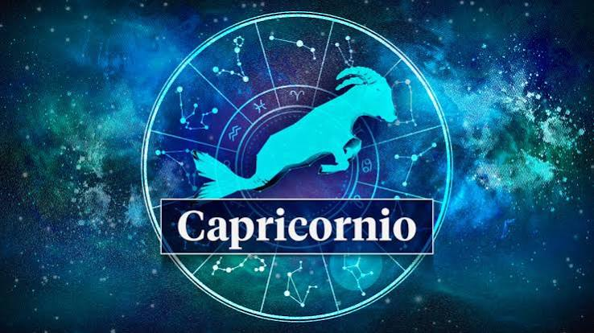
Acuario es un signo fijo y de aire, y sin duda, es el signo con mayor capacidad para la invención
de toda la rueda zodiacal. Simpático, original y brillante, Acuario también es un signo muy
humanitario, al mismo tiempo que independiente e intelectual. Sus puntos negativos se encuentran
en su inestabilidad e imprecisión y en su tendencia a llevar la contraria casi por sistema.
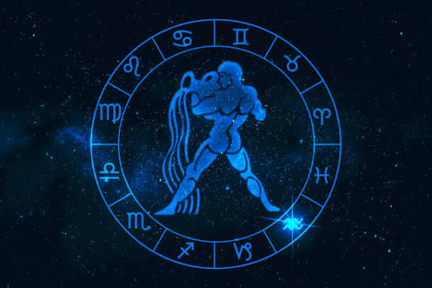
Piscis es un signo mutable y de agua, también es el último signo del zodiaco, precisamente por
eso, es el más rico y complejo de todos. Sensible ante el sufrimiento de los demás, responde con
buena voluntad y ganas de ayudar. No le gusta sentirse preso y ni respeta las convenciones, así,
por las buenas, aunque tampoco tiende a luchar contra lo establecido, sencillamente, discurre por
otro lado.
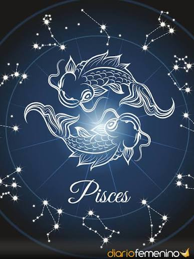